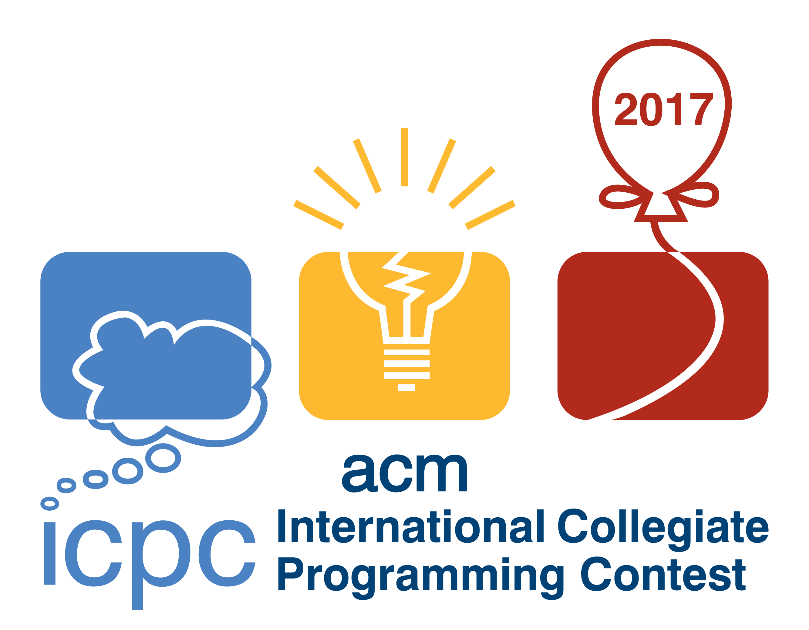

| Rank | Name | Solved | Time | A | B | C | D | E | F | G | H | I | J | K | Attm Solv |
|---|---|---|---|---|---|---|---|---|---|---|---|---|---|---|---|
| Total Submitted First Yes Time Total Solved |
91 2 80 |
94 6 78 |
13 -- 0 |
48 155 11 |
157 27 28 |
10 -- 0 |
8 62 5 |
203 37 28 |
18 160 6 |
44 169 4 |
26 107 1 |
712 -- 241 |
